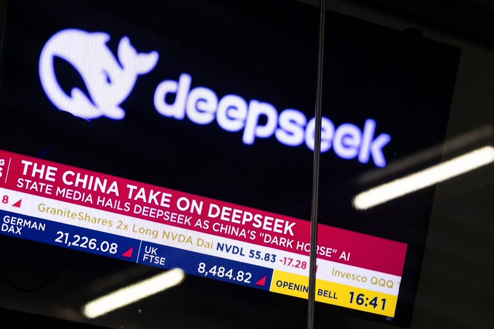

מה הסיפור הגדול של DeepSeek הסינית? הרי למי יש מודל יותר גדול זה לא העניין פה, ולעניות דעתי וניסיוני - להשוות בין כלי בינה מלאכותי
פורסם במקור ב LinkedIn
מה הסיפור הגדול של DeepSeek הסינית? הרי למי יש מודל יותר גדול זה לא העניין פה, ולעניות דעתי וניסיוני - להשוות בין כלי בינה מלאכותית זה כמו להשוות בין דגמי אנדרואיד בזמן שכולם יודעים שאין כמו אייפון.
ובאמת, עבור האדם הממוצע - אין כמו החוויה של ChatGPT. גם אם מדעית יש מודלים שמוכיחים את עצמם טוב יותר, הממשק, הזמינות במחשב ובנייד, היכולת לכתוב לו, לדבר אליו, ולהראות לו, והיכולת שלו להבין אותנו גם בעברית וללמוד אותנו לאורך הזמן (עם פיצ'ר ה"זכרון" שיש לו) - הופכים אותו למוצר שאין לו מתחרים אמיתיים. כולם מנסים, אבל בנתיים נכון להיום אף אחד לא מצליח ליצור מוצר מוצלח כמו ChatGPT.
אז למה בכל זאת ברגע שחברה סינית קטנה השיקה מודל משוכלל זה הכה גלים, יצר כותרות, ואפילו השפיע בצורה דרמטית על שוק ההון?
התשובה היא שזו המהפכה הסינית בבינה מלאכותית -
לפני כמה שנים, אם הייתם שואלים מי מוביל את מרוץ ה-AI, התשובה הייתה ברורה: OpenAI, גוגל, מטא. המערב שלט.
אבל השבוע קרה משהו ששובר את הדפוס -
מודל חדש בשם Deepseek R1 יצא לאוויר העולם, והגיח מסין. הוא כמעט ברמה של GPT-4, בקוד פתוח מלא, במחיר מגוחך - ובנוי כולו על טכנולוגיה "נחותה" יחסית, בגלל מגבלות הסחר של ארה"ב על סין.
אתם מבינים - במקום לקטר על החסמים, הסינים מצאו דרכים חדשות לדחוף את גבולות היכולת של AI עם פחות משאבים!
גם אי אפשר להתעלם מהערך שהוא נותן:
🔹 מודל AI שלומד לחשוב
DeepSeek R1 הוא לא רק עוד מודל טקסט. הוא שייך לדור חדש של בינה מלאכותית שיודעת לפרק בעיות, לבדוק את עצמה, לשקול חלופות ולהגיע למסקנות טובות יותר. זה נחשב קפיצת מדרגה - ממנוע תשובות פשוט למערכת שמדמה תהליכי חשיבה (Chain of thoughts).
🔹 המחיר המפתיע
המודל אומן בסה"כ 5 מיליון דולר בלבד - סכום מגוחך ביחס למיליארדים שהשקיעו OpenAI, מטא וגוגל. הוא גם זול להפעלה, ובגרסאות קטנות אפשר להריץ אותו אפילו על מקבוק!
המשמעות? לא רק ענקיות טק יכולות לפתח בינה מלאכותית מתקדמת - אלא גם סטארטאפים, חוקרים ואפילו חובבים.
🔹 המשמעות הכי דרמטית: שבירת המיתוס של "המערב מוביל, המזרח מחקה"
DeepSeek היא לא חברה ענקית ולא גוף ממשלתי – אלא קבוצה של מתמטיקאים מבריקים שבנו אלגוריתמים חכמים כדי להתגבר על מגבלות חומרה.
💡 אז למה זה משנה כ"כ?
1️⃣ כלי AI פתוח לכל - יותר ידיים עובדות על טכנולוגיה = קצב חדשנות מטורף.
2️⃣ משאבים זה לא הכל - DeepSeek הוכיחה שלא צריך מיליארדים כדי לבנות מודל חזק.
3️⃣ חשיבה חכמה חשובה כמו כוח מחשוב - הדרך שבה מודל לומד משפיעה יותר מהגודל שלו.
בזמן שארה"ב חוסמת מכירת שבבים מתקדמים לסין, החברה הזו הוכיחה שעם יצירתיות וחדשנות אפשר להוציא לימונדה טכנולוגית מחומרה מוחלשת.
אגב, גם עליבאבא נכנסת חזק למירוץ - עם ההכרזה שלה מהשבוע של Qwen-2.5, המודל החדש של ענקית הטכנולוגיה הסינית.
זו כבר לא רק תחרות עסקית - זה מתחיל להרגיש כמו המלחמה הקרה בין ברית המועצות לארה"ב בדרך לירח.
אבל הפעם, היעד הוא אחר: שליטה בבינה מלאכותית על-אנושית.
מי ינצח? ואולי השאלה היותר מעניינת - איך זה הולך לשנות את העולם? 🚀
#AI #Deepseek #ArtificialIntelligence #OpenSource #Innovation
